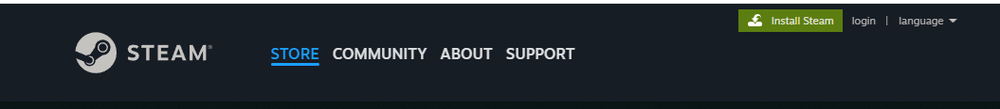
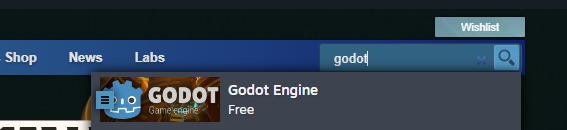
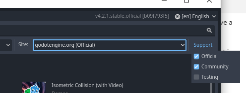
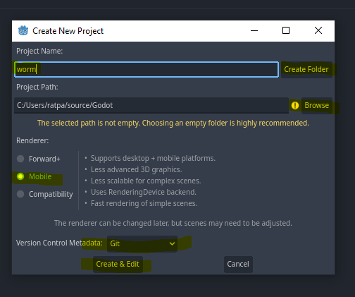
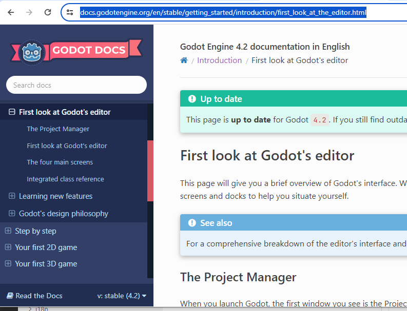
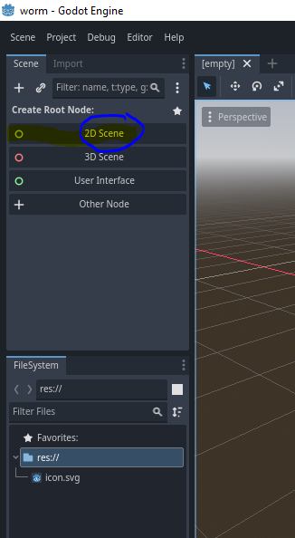
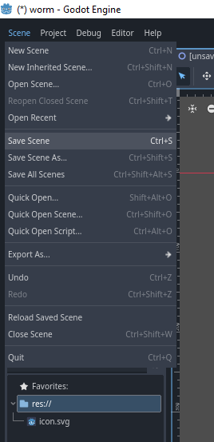
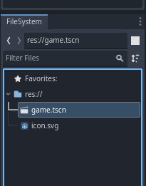
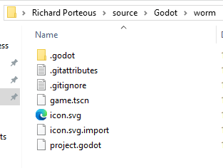
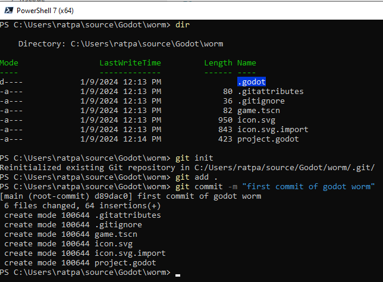

Recreate the Worm game on Godot
Welcome
Hi Welcome to this new tutorial series on Godot 4 and making 2d games.
The first app we tackle is WORM. The same game we started in pygame. I want to have the same mechanics. The worm code needs to be mostly reusable in the game that follows.
What we build here I’ll be taking back to the pygame game as an exercise. Really I want to be able to write a game in either one and decide for myself which I prefer for a particular style of game. I’ll polish up the one I prefer and publish. When I say polish up … its my weakness so I’ll still look guady unless I find decent art work or get myself motivated enough to do the artwork. (I just really don’t enjoy it as much as someone who actually likes to do it).
Lets begin
I went to https://store.steampowered.com/ and installed steam by clicking the button. 
After it installed I created an account and was logged in.
Once logged in I searched to find Godot and downloaded that. 
Now if you want you can go to the website https://godotengine.org/ instead and you will have a few more choices.
Currently on the website godot 3 is LTS and Godot is Latest. .Net version lets you use C#. I’m fairly experienced at C# but we want to learn python or GdScript which is similar.

So the Latest Godot (without .net) is the same as the version on steam.
Once installed you may find you want a few examples. Select assest library, and make sure the following is checked. 
Back in the new project tab you will want to create a project called worm.

See the highlighted areas!
- click browse to browse to the folder you want first.
- type in the project name (worm) and click create folder.
- select the renderer you want read the info to the right as it explains quite well what it can do.
- ensure git is selected
- click create & edit
Once you have the project open. open a browser and navigate to 
There is no way I could explain the interface better. Come back when you are ready.
I personally find it difficult to learn from tutorials so I tend to accumulate from various places before I truely understand what suits me best. If you see another tutorial with worm, take a look. You’ll see it is different from this one, but may show you another way to achieve the same goal.
This is what we have so far. 
click on 2D Scene save (ctrl-s) or 
You’ll be prompted with a name and where to save.
- Change the name to game.
- save
if you didn’t rename you can do that by right clicking ion the tscn file.

Let us take a look at what we have in the folder. I’m on windows so use windows explorer.

We have a git attributes and git ignore file , plus the files we see in the IDE and a few other godot specific files. The git files should be good to filter out what we dont need so lets create and initialise a git repository.
from the correct folder type the following in your terminal. see NOTES
git init
git add .
git branch -M "main"
git commit -m "first commit of godot worm"

To set upstream
- you would need a repository on github and your command would be something like
git remote add origin https://github.com/account-name/godot-worm.git
I’m using microsoft powershell (not windows powershell - weird huh!). But any terminal should do.
if has upstream
- you could push the repository
git push origin main
We will continue this in the next post. I suggest you check out more about git, because we wont touch it anymore in this series.
NOTES:
After using Hugo (this site was generated by it) I was suprised to note that they preferred use to use a non windows terminal (ok not suprising). Powershell which comes with windows is not good enough either. They suggested Microsoft Powershell which is different - that is a suprise (ok maybe not). The other option is to use wsl or a linux terminal. see hugo quick start.